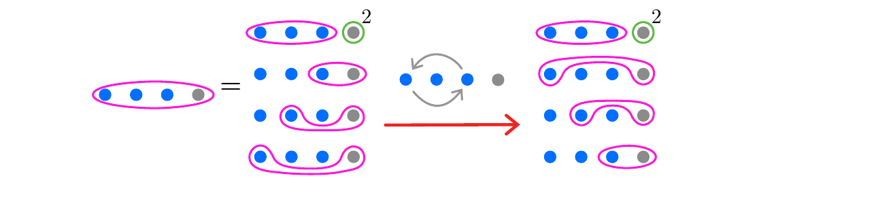
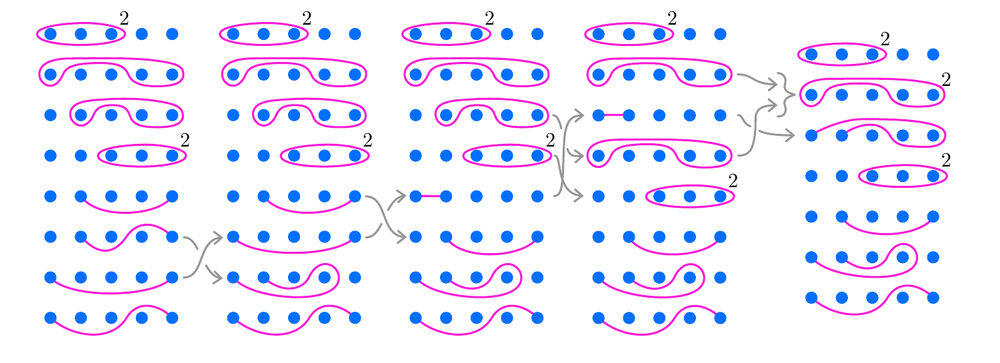
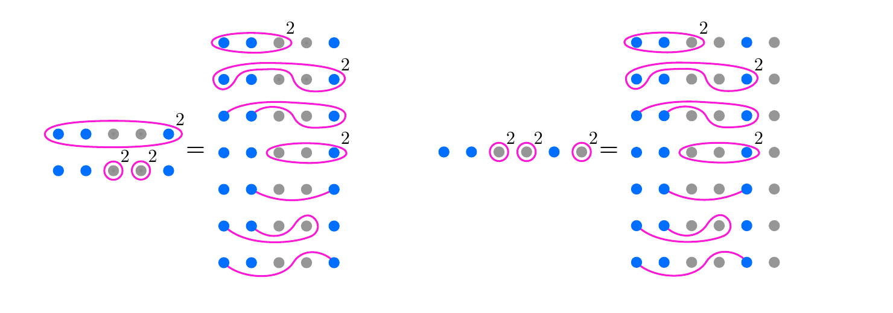

2 · Rearrange the marked points
Drag the first and third marked points around the second. This is a change of the planar chart, not an extra factor.

Thesis Figure 4.6, printed page 34.
4 · Hurwitz moves make the odd twists liftable
Follow the five columns left to right. The arrows group several adjacent Hurwitz moves; the last column has only liftable factors.

Thesis Figure 4.8, printed page 36.
5 · Replace points by boundaries and redraw on the sphere
Replace the third and fourth marked points by inner boundaries, include their boundary-twist corrections, and put the exterior boundary on the right of the sphere.

Thesis Figure 4.9, printed page 36.